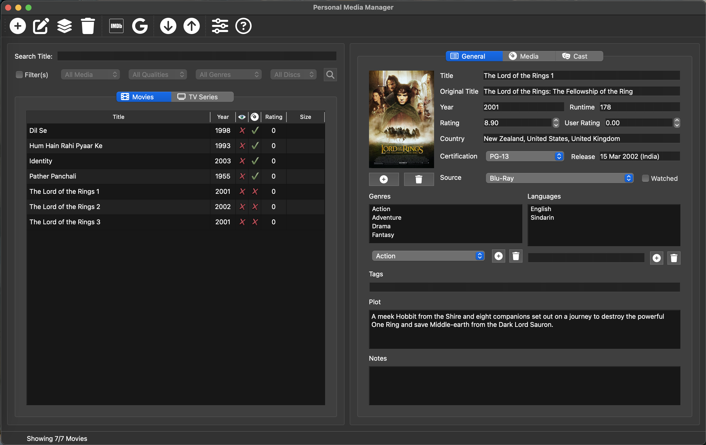
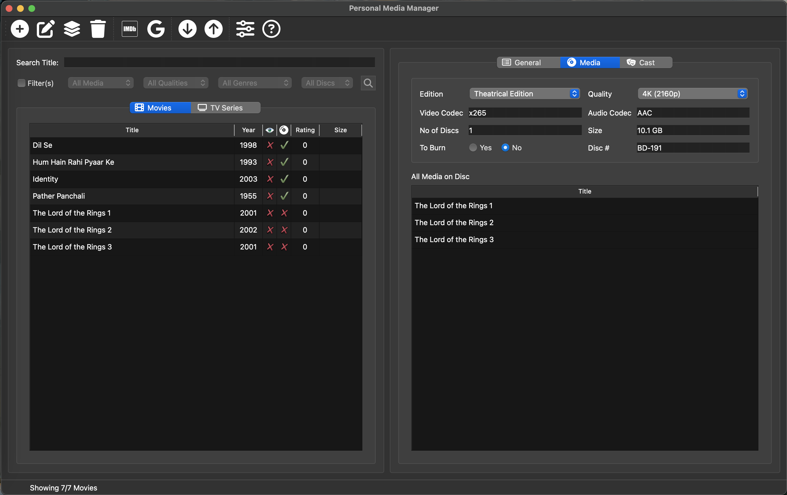

Personal Media Manager
v1.1.0
(26-11-2024)
Tired of trying to find a media manager for your DVDs, Blu-Rays and Downloads?
I was... The ones I found we either too expensive or had too much than one can manage.
So I decided to build one, open source, so anyone can use and extend as needed (with due credit ofcourse).
So enjoy collecting and managing your movies and tv series...
Current Feautures:
-
Add Movies and Tv Series from Media -> Add New menu or the '+' icon on the toolbar


- Add custom Genres and Languages from the General Tab
- Add/Remove Poster from the General Tab
-
Update any properties in the General, Media, Episodes tabs and use Update Media to Save


- Use Media -> Delete or the Delete Icon on the Toolbar to delete movies / series (multi-select supported)
-
Use Media -> Bulk Update to update common properties for multiple selected movies (not supported for series)

-
Use Media -> Fetch Details or the IMDB icon to get details of the movie/series from IMDB (multi-select supported)

- You can build custom scrapers and add to the templates directory following implementing the required methods and making an entry in registry.json
-
Use Media -> Import / Export to import and export from and to popular formats like CSV/XLSX/JSON


- You can build custom importers and exporters like above
- Publish is similar to export but with additional functionality. Have added a sample publisher for Firebase. You can build ones for creating web sites or publishing to other online sources
-
The Episodes Tab (only visible for series) you can view / add / delete episodes (multi-select supported except for edit)

- The Media Tab lets you set media details for Movies and in case you have added a disc tag for the media shows you which other media has the same tag (on the same disc)
- You can change the directory for downloading posters via Preferences to a local drectory instead of the app content (reducing app size)
- [NEW] Added support for Backup and Restore of Database to make updating of databases easier. (Will add support for backing up posters soon).
Please do reach out to me at shahidskazi@hotmail.com or leave message on GitHub and I shall try my best to get back to you.